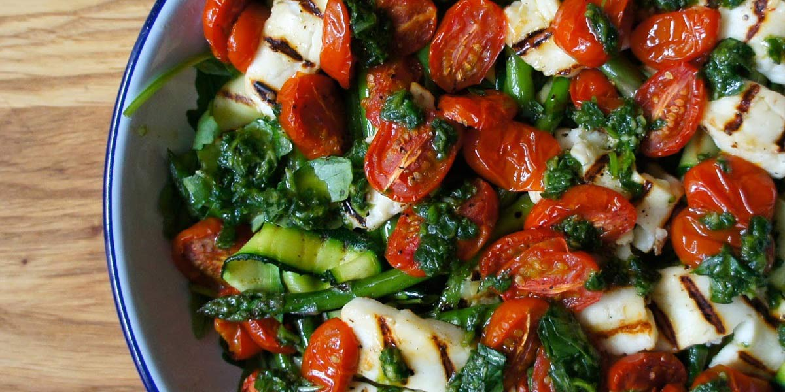

Halloumi & Tomato Salad
Recipe Specification
Ingredients List
| Ingredients | Quantity |
|---|---|
| Halloumi | 1x250g |
| Cherry Tomatoes | 1 Punnet |
| Asparagus | 300g |
| Rocket | 300g |
| Sunflower Seeds | 100g |
| Table Salt | 1 tsp |
| Cracked Black Pepper | 1 tsp |
| Vegetable Oil | 1 tsp |
Yield: 6-8 portions
Preparation
- Slice halloumi into 1cm thick slices
- Cut cherry tomatoes in half and place on a baking tray lined with grease proof paper. Drizzle with vegetable oil and season with salt and pepper.
- Snap the base of the asparagus and discard stalky bit. Slice asparagus on the diagonal at a 2mm thickness.
- Wash and spin dry rocket leaves.
- Pre-heat oven to 170’C.
Cooking Instructions
- Place tray of tomatoes in oven for 15-18 minutes.
- Place a griddle pan over a high heat and brush with vegetable oil. Once oil start to smoke, add halloumi slices and grill for 2 minutes per side. Allow to cool and set aside.
- Place a sauce pan of water on a high heat and bring to the boil. Add asparagus and cook for 1 minute before draining water and running cold water over it.
- Place a frying pan over medium/high heat and toast sunflower seeds. Constantly move around the pan to ensure even browning and toast for 2-3 minutes.
- Remove tomatoes from oven and allow to cool to room temperature.
- Mix tomatoes with rocket, halloumi, asparagus, sunflower seeds and vegetable oil before seasoning to taste.

Serving Suggestions
Serve with couscous.
Storing instructions
Store in an airtight contain before placing in the fridge. Consume with 4 days of making.